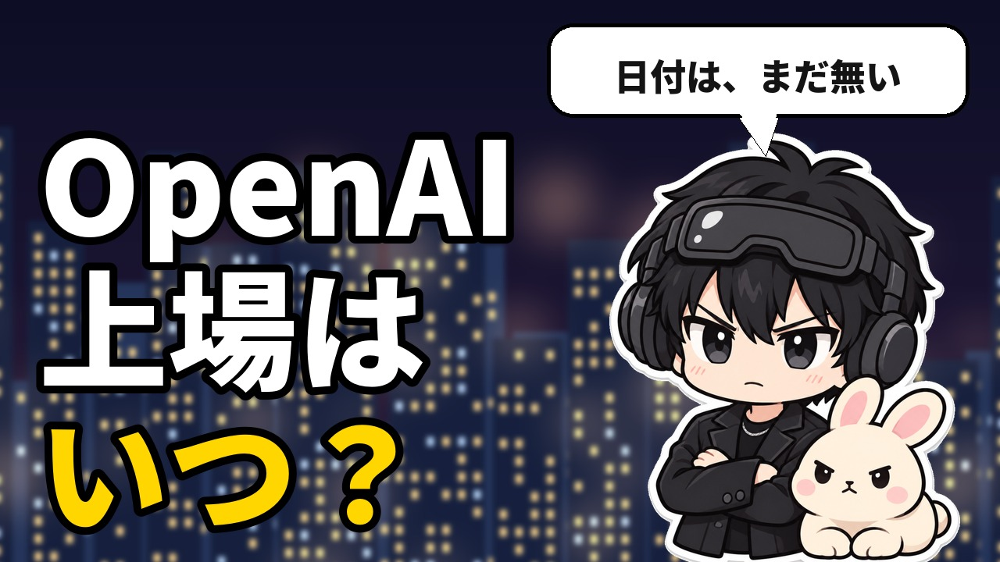
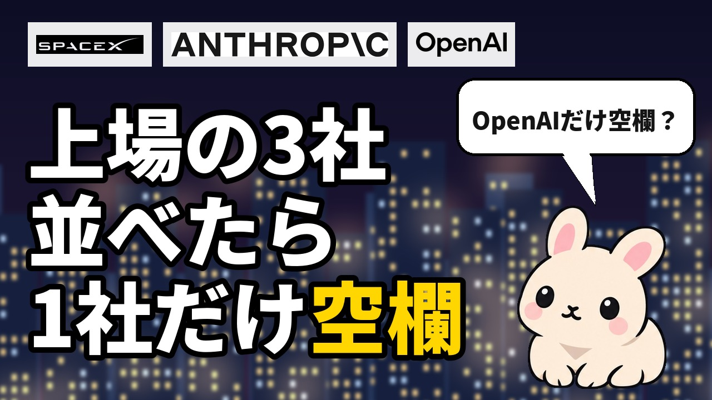

OpenAI 特集サンプル3通り
海外Yパパラジオの型（事実の落差で始める→問いと順番→事実と見方を分ける→Colne の見方）。3本は構成の型だけを変えています。見方とたとえ話は、Colne さんの X・note の言葉（見方カード）だけを使っています。背景の街の絵は描いたもので、実在の写真ではありません。
A 問いに答える型（3分40秒）
題の案：OpenAIの上場はいつ？日付がまだ無い理由を、日付と数字でたどる
サムネ

台本（［］は見方カードの番号）
- 2026年11月19日。アンソロピックが、ナスダックで取引を始めました。集めたお金は、およそ813億ドル。上場として、記録が残る中で最大です。
- その前の日。OpenAIのアルトマンCEOは、「上場するつもりだ」と話しました。日付は、まだありません。
- どうも、Colneです。元資産運用会社所属、投資歴8年の投資家です。
- きょうの問いは、ひとつ。OpenAIは、いつ上場するのか。そして、なぜ今年ではないのか。
- 話す順番は、3つです。これまでの日付、会社の数字、そして最後に、私の見方です。
- 書類や報道で確かめられる事実と、私の見方は、分けて話します。
- まずは、日付です。2026年6月8日。OpenAIは、上場の書類を、アメリカの規制当局に、非公開で出しました。
- 非公開の提出とは、中身を公表せずに、先に当局の確認を受ける手続きのことです。
- 6月26日。アメリカのニューヨーク・タイムズが、上場を2027年に先送りする方向だと伝えました。
- 8月19日。フライアー最高財務責任者は、社員の集まりで、2027年に上場企業になると話したと、CNBCが伝えています。
- 11月4日。ブロックマン社長は、来年までに準備が整うかと聞かれ、「そう思う」と答えました。
- ただし、上場する日も、取引所も、値段も、まだ決まっていません。
- 次に、会社の数字です。OpenAIは、ことし3月に、1220億ドルを集めました。このときの会社の評価額は、8520億ドルです。
- アンソロピックは、上場の値段で、およそ1.5兆ドルの評価になりました。
- ここからは、Colneの見方です。
- 上場を先に延ばす報道が出た6月、私は、noteにこう書きました。「一度立ち止まって再計算」。 ［A-06］
- AIブームを引っぱってきた、将来の夢への期待を、計算し直すきっかけになった、という見方です。 ［A-06］
- そして10月には、「数字の前提条件が問われた」と書きました。 ［A-05］
- 設備を作る側の契約額、使う側の売上、そして手元に残る現金。この3つを、同じ期間でそろえて比べて、はじめて、投資を続ける力が見える、という見方です。 ［A-05］
- Xでは、「利益と現金に繋がるかの選別」とも書きました。AIの会社は、投資の負担を、会社ごとに見きわめる段階だ、という見方です。 ［A-17］
- では、どんな基準で、何を見て、売り買いを決めるのか。私の具体的なやり方は、noteのメンバーシップで、レポートにしています。
- テクニカル分析の思考法や、メンバーシップ限定のオープンチャットで、熱量が高い人同士の情報交換の機会も用意しています。
- 投資の判断は、ご自身でお願いしますね。
- まずはXで、毎日の発信をのぞいてみてください。Colneがどんな人かは、ホームページで。リンクは、概要欄にあります。
B 並べて比べる型（3分20秒）
題の案：スペースX・アンソロピック・OpenAI 上場3社を並べたら、1社だけ空欄だった
サムネ

台本（［］は見方カードの番号）
- 1株135ドルと、1株83ドル。ことしアメリカで、上場の記録を塗り替えた2社の、値段です。
- そして、3社目として名前が挙がるのが、OpenAIです。
- どうも、Colneです。元資産運用会社所属、投資歴8年の投資家です。
- きょうは、スペースX、アンソロピック、OpenAIの3社を、同じ物差しで並べます。
- 物差しは4つ。値段が決まった日、1株の値段、集めたお金、会社の評価額です。事実と、私の見方は、分けて話します。
- 1社目、スペースX。2026年6月11日、1株135ドルで値段が決まりました。
- 集めたお金は、750億ドル。会社の評価額は、およそ1.77兆ドルです。
- 次の日、ナスダックでの最初の値段は、150ドルでした。
- 2社目、アンソロピック。11月18日、1株83ドルで値段が決まりました。予定していた幅は、70ドルから78ドルで、その上です。
- 集めたお金は、およそ813億ドル。会社の評価額は、およそ1.5兆ドルです。
- 次の日、ナスダックでの最初の値段は、111ドル50セントでした。
- 3社目、OpenAI。値段が決まった日、1株の値段、集めたお金。この3つは、まだ空欄です。
- 埋まっているのは、会社の評価額だけです。ことし3月の資金集めで、8520億ドルとされました。
- 上場の時期は、ブロックマン社長が11月4日に、2027年には準備が整うという考えを示しています。
- ここからは、Colneの見方です。
- 6月、スペースXの上場の前に、私はnoteにこう書きました。「強引に手元現金を捻出」。 ［A-07］
- 大きな上場の枠を取るために、機関投資家が、利益の出ているハイテク株を売って、現金を作っている。それが、需給の緩みになっている、という見方です。 ［A-07］
- 上場について、Xにはこう書いています。「機関は蛇口を回す側」。水を出すのも止めるのも、バルブを握る側しだい、という見方です。 ［A-01］
- そして上場のあとは、「次に蛇口が開く日はいつか？」。売れる株が次に増える日を、頭に入れておく、という見方です。 ［A-02］
- では、どんな基準で、何を見て、売り買いを決めるのか。私の具体的なやり方は、noteのメンバーシップで、レポートにしています。
- テクニカル分析の思考法や、メンバーシップ限定のオープンチャットで、熱量が高い人同士の情報交換の機会も用意しています。
- 投資の判断は、ご自身でお願いしますね。
- まずはXで、毎日の発信をのぞいてみてください。Colneがどんな人かは、ホームページで。リンクは、概要欄にあります。
C たとえ話で通す型（蛇口）（3分11秒）
題の案：上場は「蛇口」。OpenAIの蛇口はいつ開く？
サムネ
台本（［］は見方カードの番号）
- 813億ドルと、ゼロ。上場で集めたお金です。前がアンソロピック、後ろがOpenAIです。
- どうも、Colneです。元資産運用会社所属、投資歴8年の投資家です。
- きょうは、上場を「蛇口」にたとえて、OpenAIの今を見ていきます。このたとえは、私が11月12日に、Xに書いたものです。 ［A-01］
- 事実と、私の見方は、分けて話します。
- 私はこう書きました。「機関は蛇口を回す側」。上場では、機関投資家が蛇口を回し、個人は、下で口を開けて待つ側。水を出すのも止めるのも、バルブを握る側しだい、という見方です。 ［A-01］
- では、事実です。アンソロピックの取引が、ナスダックで始まったのは、11月19日です。
- 1株83ドルで値段が決まり、およそ813億ドルが集まりました。最初の値段は、111ドル50セントでした。
- OpenAIは、ことし6月8日に、上場の書類を、非公開で出しています。
- ただ、アルトマンCEOは9月に、2026年中には上場しないと話しました。
- 11月4日、ブロックマン社長は、2027年には準備が整うという考えを示しています。上場の日、取引所、値段は、まだ決まっていません。
- OpenAIは、ことし3月に、1220億ドルを集め、会社の評価額は、8520億ドルとされました。
- ここからは、Colneの見方です。
- アンソロピックの上場の前、私はnoteにこう書きました。「次に蛇口が開く日はいつか？」 ［A-02］
- 初日の値上がりだけで安心せず、売れる株が次に増える日を、頭に入れておく。知るべきは憶測ではなく、どの株が、どの条件で、いつ売れるようになるか、という事実で、それは目論見書から読める、という見方です。 ［A-02］
- 売れる株が増える日とは、上場の前からの株主が、売ってよくなる日のことで、ロックアップの解除と呼ばれます。
- 同じ記事で、私は、上場の直後に見るのは、最初の数分の高値ではなく、売買代金を伴って取引が成立している価格帯だ、とも書きました。 ［A-02］
- では、どんな基準で、何を見て、売り買いを決めるのか。私の具体的なやり方は、noteのメンバーシップで、レポートにしています。
- テクニカル分析の思考法や、メンバーシップ限定のオープンチャットで、熱量が高い人同士の情報交換の機会も用意しています。
- 投資の判断は、ご自身でお願いしますね。
- まずはXで、毎日の発信をのぞいてみてください。Colneがどんな人かは、ホームページで。リンクは、概要欄にあります。